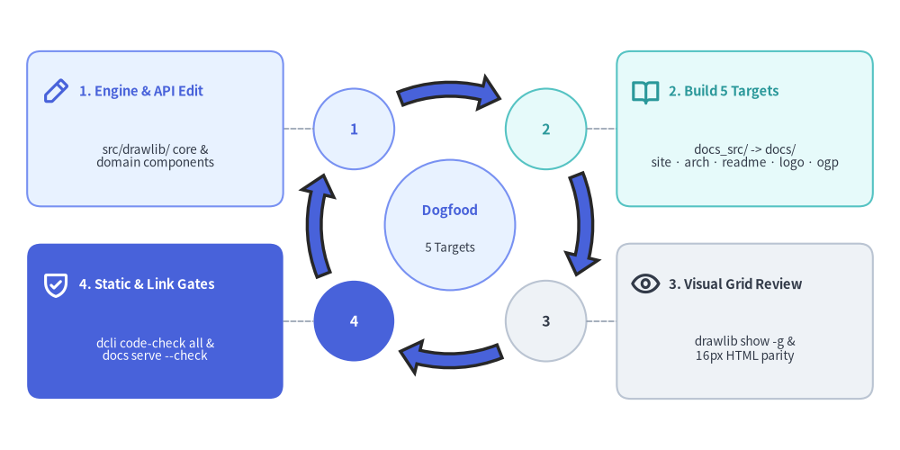
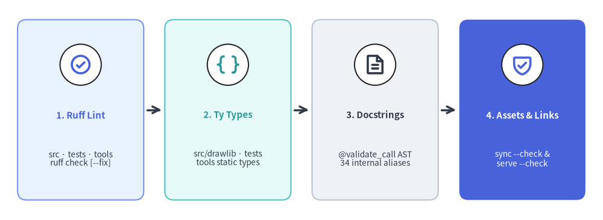

Test Architecture: Dogfooding & Static Quality Gates
Unit and golden-image tests verify individual components in isolation, while repository dogfooding and multi-stage static quality gates verify Drawlib as a complete "Illustration & Documentation as Code" system.

Source Code
from drawlib.canvas import save, setup
from drawlib.icons import phosphor
from drawlib.lines import line
from drawlib.shapes import rectangle
from drawlib.smartarts import Cycle
from drawlib.styles import Styles
from drawlib.text import text
setup(width=116, height=58)
loop = Cycle(
style=Styles.Neutral,
text_style=Styles.DarkBold.patch(text_size=11.0),
arrow_style=Styles.PrimaryBold,
clockwise=True,
start_angle=135.0,
node_shape="circle",
node_radius=5.2,
arrow_type="arc",
arrow_width=1.8,
arrow_head_width=4.2,
arrow_color_mode="monochrome",
arrow_gap=2.0,
)
loop.add("1", style=Styles.PrimaryNeutral, text_style=Styles.PrimaryBold.patch(text_size=11.5))
loop.add("2", style=Styles.SecondaryNeutral, text_style=Styles.SecondaryBold.patch(text_size=11.5))
loop.add("3", style=Styles.Neutral, text_style=Styles.DarkBold.patch(text_size=11.5))
loop.add("4", style=Styles.PrimaryFlat, text_style=Styles.WhiteBold.patch(text_size=11.5))
loop.set_center(
text="Dogfood",
description="5 Targets",
radius=8.4,
style=Styles.PrimaryNeutral,
text_style=Styles.PrimaryBold.patch(text_size=10.8),
description_style=Styles.Dark.patch(text_size=9.6),
)
loop.draw(xy=(58.0, 29.0), radius=17.5, align="center")
cards = [
(
20.0,
41.4,
(36.5, 41.4),
(40.4, 41.4),
"1. Engine & API Edit",
"src/drawlib/ core &\ndomain components",
phosphor.pencil_simple,
Styles.PrimaryNeutral,
Styles.PrimaryBold,
Styles.Dark,
),
(
96.0,
41.4,
(75.6, 41.4),
(79.5, 41.4),
"2. Build 5 Targets",
"docs_src/ -> docs/\nsite · arch · readme · logo · ogp",
phosphor.book_open,
Styles.SecondaryNeutral,
Styles.SecondaryBold,
Styles.Dark,
),
(
96.0,
16.6,
(75.6, 16.6),
(79.5, 16.6),
"3. Visual Grid Review",
"drawlib show -g &\n16px HTML parity",
phosphor.eye,
Styles.Neutral,
Styles.DarkBold,
Styles.Dark,
),
(
20.0,
16.6,
(36.5, 16.6),
(40.4, 16.6),
"4. Static & Link Gates",
"dcli code-check all &\ndocs serve --check",
phosphor.shield_check,
Styles.PrimaryFlat,
Styles.WhiteBold,
Styles.White,
),
]
for cx, cy, p0, p1, title, desc, icon_fn, box_st, head_st, body_st in cards:
line(p0, p1, style=Styles.MutedDashed.patch(line_width=1.1))
rectangle((cx, cy), width=33.0, height=20.0, style=box_st.patch(shape_r=1.8))
icon_fn((cx - 12.8, cy + 4.8), width=3.8, style=head_st)
text((cx - 9.8, cy + 4.8), title, style=head_st.patch(halign="left", text_size=10.6))
text((cx, cy - 3.6), desc, style=body_st.patch(text_size=9.8))
save()
1. Concept: Live Repository Dogfooding
Isolated unit tests cannot answer macro-level quality questions:
- Do embedded diagram labels maintain crisp typography parity alongside
16pxHTML body prose? - Do localized multi-page navigation trees (
en/andja/), sitemaps, OGP banners, andllms.txtindexes compile cleanly together? - Does modifying a shared primitive or style preset introduce subtle visual crowding across real architectural and tutorial illustrations?
Drawlib closes this gap by using the repository itself as a live dogfooding environment: five production documentation targets under docs_src/ compile directly into docs/ using the local src/drawlib/ source tree, and GitHub Pages serves main:/docs directly (https://www.drawlib.com/) without requiring a separate pages.yml build workflow.
2. Positioning: The 5 Repository Targets & Companion Examples
Together with the companion yuichi110/drawlib-examples repository (https://examples.drawlib.com/), Drawlib's dogfooding suite exercises every drawlib init project archetype in production:
| Build Target / Repo | Source Directory | Archetype | Generated Output | Dogfooding Coverage |
|---|---|---|---|---|
site |
docs_src/site/ (en/, ja/) |
site |
docs/ (en/, ja/, images/, _assets/, pypi_images/) |
Multi-locale (en/ja) user guide, API reference, animations, and SEO artifacts (www.drawlib.com). |
architecture |
docs_src/architecture/ (en/) |
site |
docs/architecture/ |
Single-locale (en) software architecture specification (www.drawlib.com/architecture/). |
readme |
docs_src/readme/ |
images |
docs/readme_images/ |
Standalone Python scripts rendering hero banners and feature showcases for README.md. |
logo |
docs_src/logo/ |
images |
docs/logo/ |
Brand mark, wordmark, and favicon vector/raster asset generators. |
ogp |
docs_src/ogp/ |
images |
docs/ogp_images/, docs_src/{site,architecture}/_assets/ogp.png |
1280×640 GitHub Social Preview and Open Graph banner generators. |
drawlib-examples (companion repo) |
yuichi110/drawlib-examples |
doc & slide |
HTML, A4 PDF, .docx, .pptx |
Linear technical guides and 16:9 presentation decks (examples.drawlib.com). |
3. Details: Static Code Gates vs. Asset & Documentation Gates
Drawlib separates fast static code analysis (./dcli code-check all, enforced on every push and PR by .github/workflows/quality.yml on Ubuntu + Python 3.12) from asset manifest and compiled HTML link verification gates:

Source Code
from drawlib.canvas import save, setup
from drawlib.icons import phosphor
from drawlib.smartarts import CardList
from drawlib.styles import Styles
setup(width=120, height=44)
gates = CardList(
style=Styles.Neutral.patch(shape_r=1.8),
text_style=Styles.DarkBold.patch(text_size=10.8),
description_style=Styles.Dark.patch(text_size=9.8),
badge_shape="circle",
badge_style=Styles.White,
icon_style=Styles.PrimaryBold,
direction="horizontal",
spacing=3.8,
show_arrows=True,
arrow_style=Styles.DarkBold,
)
gates.add(
"1. Ruff Lint",
"src · tests · tools\nruff check [--fix]",
icon=phosphor.check_circle,
style=Styles.PrimaryNeutral.patch(shape_r=1.8),
text_style=Styles.PrimaryBold.patch(text_size=10.8),
icon_style=Styles.PrimaryBold,
)
gates.add(
"2. Ty Types",
"src/drawlib · tests\ntools static types",
icon=phosphor.brackets_curly,
style=Styles.SecondaryNeutral.patch(shape_r=1.8),
text_style=Styles.SecondaryBold.patch(text_size=10.8),
icon_style=Styles.SecondaryBold,
)
gates.add(
"3. Docstrings",
"@validate_call AST\n34 internal aliases",
icon=phosphor.file_text,
style=Styles.Neutral.patch(shape_r=1.8),
text_style=Styles.DarkBold.patch(text_size=10.8),
icon_style=Styles.DarkBold,
)
gates.add(
"4. Assets & Links",
"sync --check &\nserve --check",
icon=phosphor.shield_check,
style=Styles.PrimaryFlat.patch(shape_r=1.8),
text_style=Styles.WhiteBold.patch(text_size=10.8),
description_style=Styles.White.patch(text_size=9.8),
badge_style=Styles.White,
icon_style=Styles.PrimaryBold,
)
gates.draw(xy=(3.5, 4.0), width=113.0, height=36.0)
save()
3.1. The Three Static Code Gates in ./dcli code-check all
Running ./dcli code-check all executes three deterministic checks in sequence (complemented by ./dcli code-check lines for source/test line-count metrics):
- Ruff Lint (
./dcli code-check lint [--fix]): Runsuv run ruff check [--fix]sequentially acrosssrc,tests, andtools, enforcing Python 3.11+ compatibility, import ordering, security lints, and formatting rules. - Ty Static Type Checking (
./dcli code-check type): Runsuv run ty checkacrosssrc/drawlib,tests, andtools, verifying strict type safety across all public signatures, Pydantic models, and CLI toolsets. @validate_callDocstring Contract Guard (./dcli code-check docstring): While internal functions insrc/drawlib/_core/use constrained Pydantic type aliases froml2_typesfor runtime validation, leaking internal alias names into public docstrings degrades IDE hover help.tools/dcli/code_check/docstring.py(find_docstring_violations()) parses ASTs acrosssrc/drawlib/_core/(excludingl2_types) and scans every@validate_call-decorated function's docstring against 34 forbidden internal type aliases (TypeAlpha,TypeAngle,TypeAngle90,TypeBend,TypePosFloat,TypePosInt,TypeCoordinate,TypeColor, ...,TypeFont, andFontBase), ensuring docstrings document standard Python types (float,int,tuple[float, float]).
3.2. Asset Manifest & Link Hygiene Gates (sync --check & serve --check)
Two domain-specific verification commands guard external assets and compiled HTML sites:
- Offline Release Asset Sync Gate (
./dcli release-assets sync --check): Recomputes deterministic.ziphashes acrosstools/release_assets/v0.3/offline and fails with exit code1ifsrc/drawlib/_release_assets.pyis out of sync with any of the 83 asset packages. - Headless Link & Path Hygiene Scanner (
./dcli docs serve <target> --check): Invokesdrawlib serve <out_dir> --checkon compileddocs/ordocs/architecture/outputs without starting the interactive HTTP server—verifying every relative link, imagesrc, and heading anchor while build-time Markdown scanners reject forbidden machine-local filesystem paths and local-file URL schemes.
4. Conclusion: Architecture as a Closed Verification Loop
Across all seven chapters of this specification, Drawlib unifies four architectural pillars:
- Strict Unidirectional Core Layers (
l1_core->l2_types->l3_*->l4_canvas-> domain modules -> public facades). - Headless In-Process Compilation (Agg virtual canvas, AST dependency hashing, and SQLite build caching).
- Unified Developer Orchestration (
./dclirouting 7 specialized toolsets and 83 deterministic release asset packs). - Dual-Verification Testing & Live Dogfooding (159 test modules,
0.0–100.0%golden pixel matching, 5 dogfooded documentation targets, and 3-stage multimodal AI review).
Together, these pillars turn Illustration as Code and Illustrated Documentation as Code into a deterministic, self-verifying software engineering discipline.